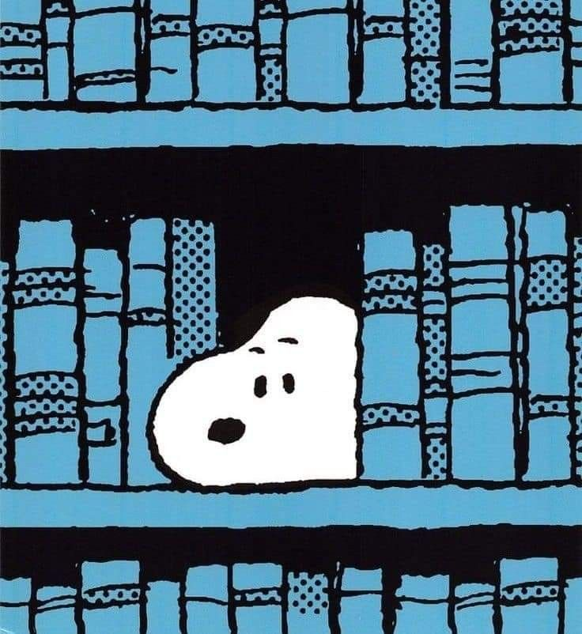

- Technical Assistance Center Intern
Technical Assistance center at Northwestern State University provides technical assistance to faculty and staff. Being apart of the team has taught me so much. I truly learned how to troubleshoot there. I also learned how to act in a professional environment, work with a team, deal with difficult problems, and not give up when you don't figure something out on the first try.
- Curiosity
My curiousity has really contributed to my success. Being a curious person has led me to dig deeper and learn as much as possible. I've done hours and hours of research. I never give up until I know something for sure. I'm so grateful for this trait because it's led me to do well on tests, at my job, and even at everyday conversations.
<
CSS Showcase
Hello World!
